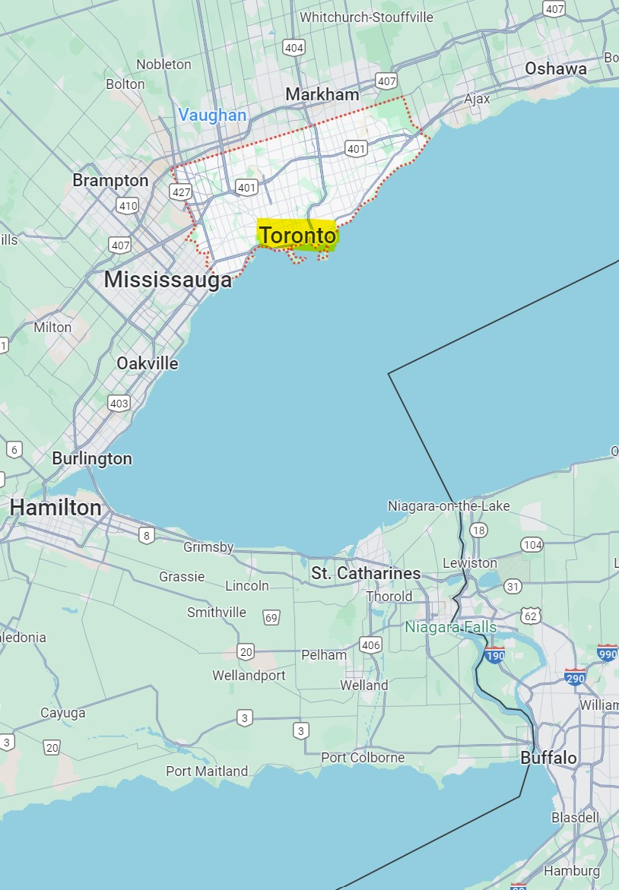
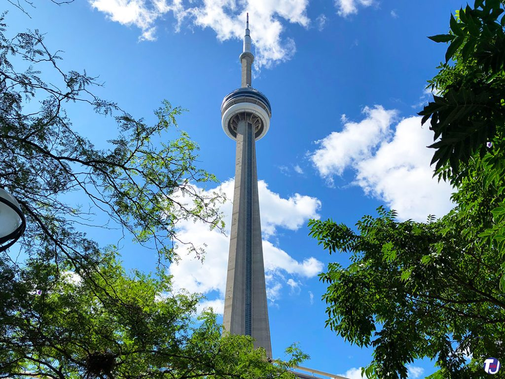
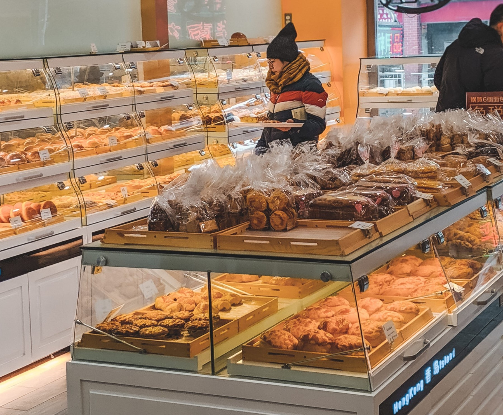
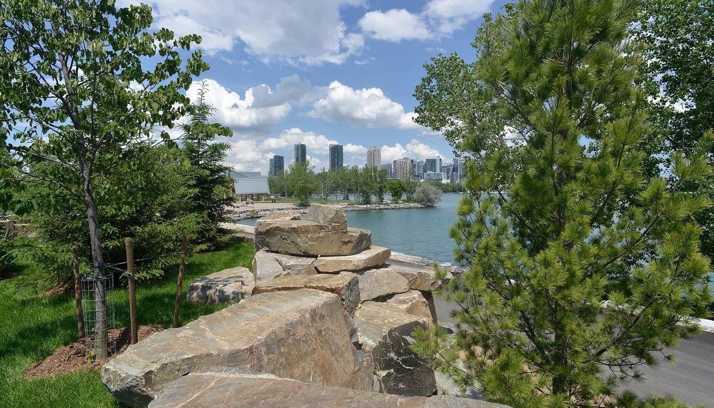
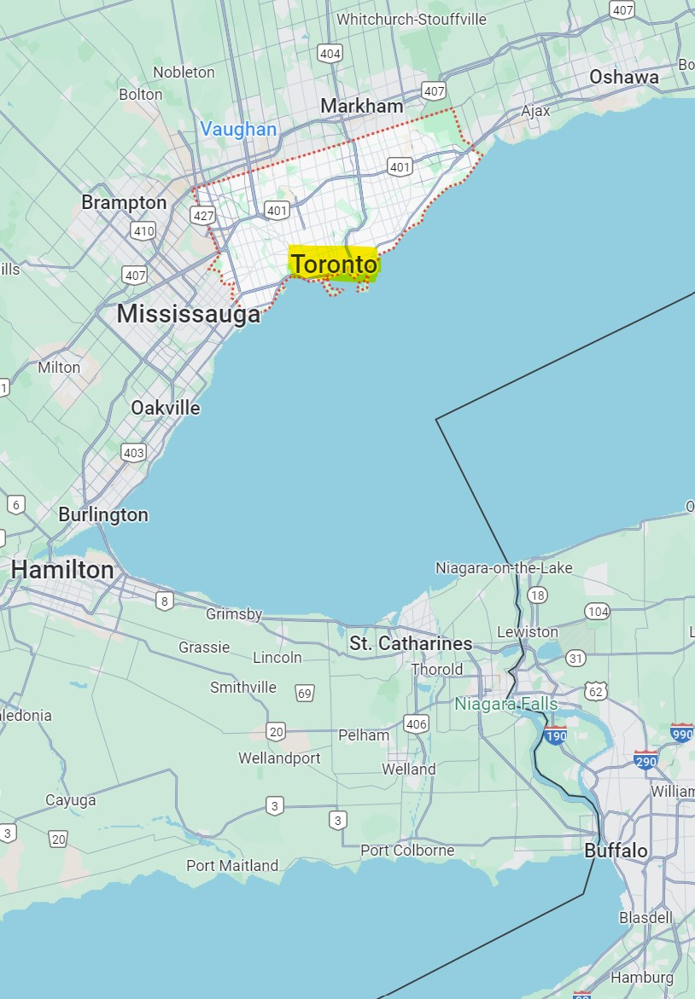
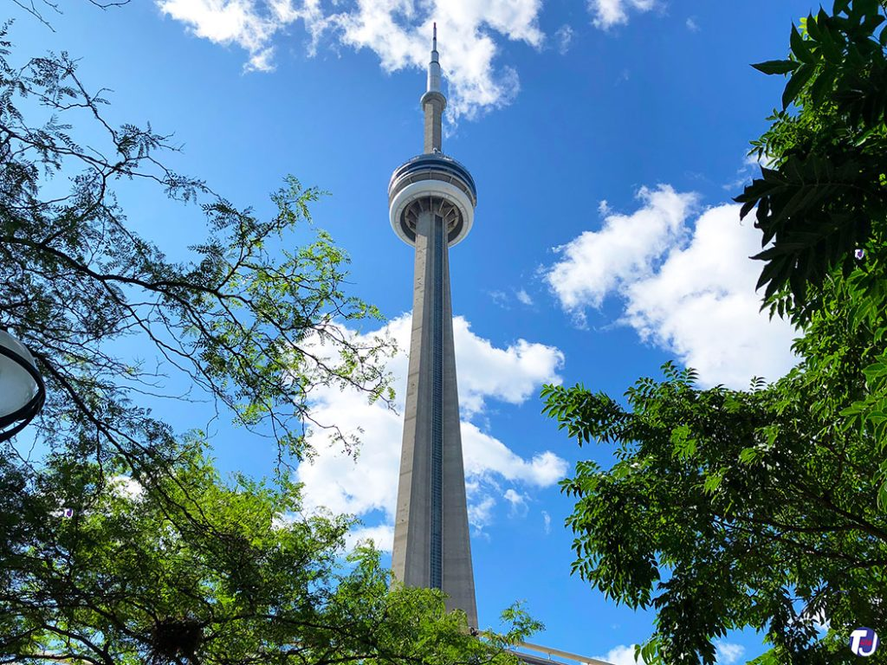
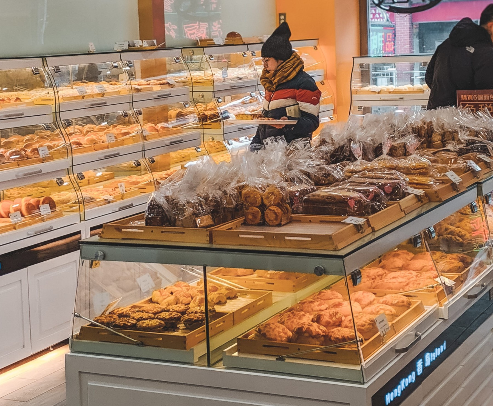
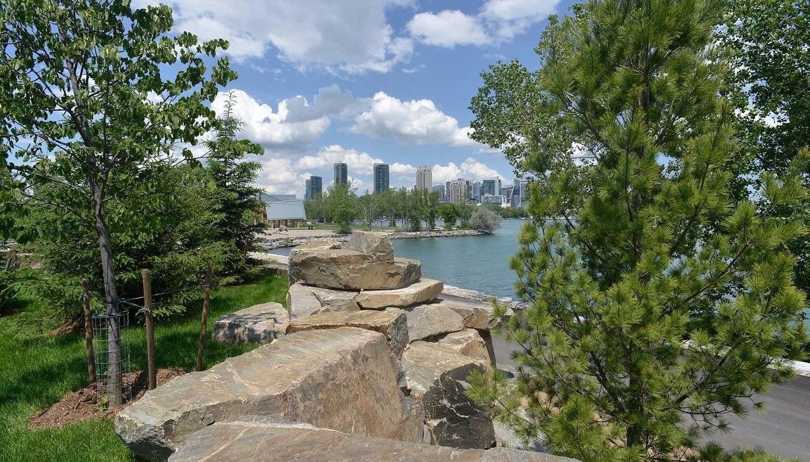

| Referenced From | Source Updated | Where I Used It |
|---|---|---|
| Link | N/A | Took a screenshot of the google maps page of Toronto to use on the homepage in index.html.  |
| Link | 7/2023 | This image is used on the homepage in index.html so when the mouse is hovered over, the image changes from the map to this. |
| Link | 9/30/2024 | This image is used in activities.html to provide a picture of the CN Tower.  |
| Link | 2024 | This image is used in activities.html to provide a picture of the Yonge-Dundas Square at night time. |
| Link | 2024 | This image is used in activities.html to provide a picture of the Toronto Eaton Centre. |
| Link | 2024 | This image is used in museums.html to provide a picture of what the Art Gallery of Ontario looks like on the outside. |
| Link | 10/18/2024 | This image is used in museums.html to provide a picture of what the Royal Ontario Museum looks like on the outside. |
| Link | 6/2023 | This image is used in museums.html to provide a picture of Little Canada and some of their miniature models. |
| Link | 7/22/2023 | This image is used in food.html to showcase Petit Potato's special dessert. |
| Link | 4/29/2020 | This image is used in food.html to showcase the bakery on the inside.  |
| Link | 2024 | This image is used in parks.html to provide a visual of High Park. |
| Link | 2024 | This image is used in parks.html to provide a visual of Trinity Bellwoods Park. |
| Link | 10/2017 | This image is used in parks.html to showcase the waterfront view from Trillium Park.  |
| Link | 3/28/2021 | This image is used in wildlife.html to showcase the different animals in Toronto's wildlife. |
| Link | 3/28/2021 | This image is used in wildlife.html to showcase the different animals in Toronto's wildlife. |
| Link | 3/28/2021 | This image is used in wildlife.html to showcase the different animals in Toronto's wildlife. |
| Link | 2021 | This image is used in wildlife.html to show the logo of Toronto's Wildlife Centre. |
| Link | 10/21/2021 | This image is used in feedback.html as a thank you image after viewers fill out the feedback survey. |